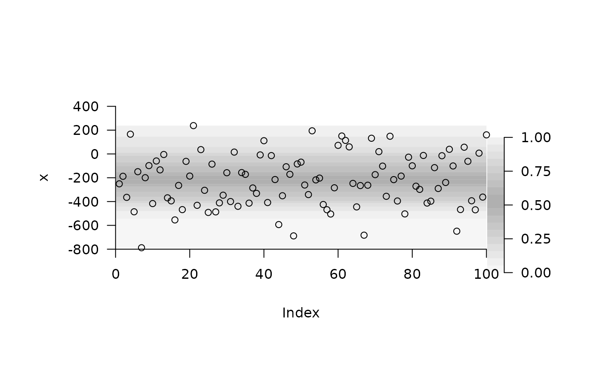

R/add_shading_quantiles.R
add_shading_quantiles.RdThis function adds shading to a plot to mark the quantiles of observed variation. Under the default settings, quantiles near the middle of a distribution are shaded more darkly than quantiles towards the edge of the distribution.
A numeric vector.
A numeric vector of probabilities.
A character vector of colours. This should be of the same length as probs.
A logical input that defines whether or not shading is added horizontally or vertically across a plot (i.e., whether x is the x or y variable on a given plot). This is passed to add_shading_bar.
A numeric input that defines the horizontal or vertical limits. This is passed to passed to add_shading_bar.
(depreciated) A logical input that defines whether or not to return a list of outputs (see Value).
Additional arguments passed to add_shading_bar.
This function adds shading to a plot to show the sample quantiles corresponding to inputted probabilities. A named list of outputs is also returned invisibly. This contains: (1) 'dat', a dataframe with probabilities ('prob'), colours ('col') and quantiles ('quantile'); (2) 'data_legend', a dataframe that contains only probabilities ('x') and colours ('col'); and (3) 'pretty_axis_args', a list of suggested arguments for pretty axes. 'data_legend' and 'pretty_axis_args' can be passed directly to add_colour_bar to add a colour bar to the plot.
# Simulate some normally distributed observations
n <- 100
x <- stats::rnorm(100, -200, 200)
pp <- par(oma = c(2, 2, 2, 4))
# Create a blank plot with appropriate axis limits
axis_ls <- pretty_plot(x, type = "n")
#> 'y' argument not supplied; 'x' is plotted against an index.
# Add shading for the quantiles of observations, saving the
# ... list returned by the function so we can add a colour bar later.
asq_ls <- add_shading_quantiles(x,
horiz = TRUE,
lim = axis_ls[[1]]$lim,
border = NA)
# Add observed points onto the plot
points(1:n, x)
# Add a colour bar via TeachingDemos::subplot() and
# ... prettyGraphics::add_colour_bar()
# ... using outputs returned by function:
TeachingDemos::subplot(fun =
add_colour_bar(
data_legend = asq_ls$data_legend,
pretty_axis_args = asq_ls$pretty_axis_args
),
x = axis_ls[[1]]$lim[2] + 1,
y = axis_ls[[2]]$lim[1],
size = c(0.2, 2.8),
vadj = 0, hadj = 0
)

par(pp)